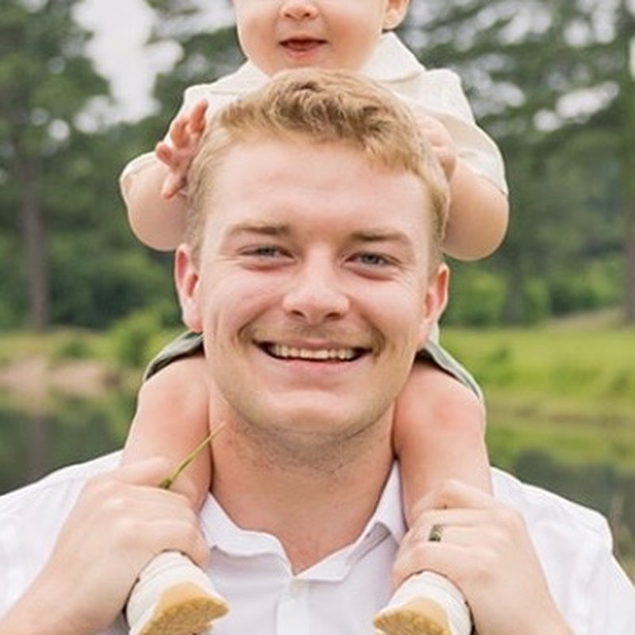

Neuroengineering · Neurology · Birmingham, AL
Garrett W. Thrash
Designing the next generation of brain-machine interfaces.
MD Candidate (Class of 2027) · Incoming PhD Student, Neuroengineering (2027)
University of Alabama at Birmingham
I decode intracranial local field potentials (LFPs) for adaptive deep brain stimulation, work on open-source tools for intraoperative neural data, and study equitable access to neurological care.
- adaptive DBS
- neural decoding
- BCI
Now · October 2026
- Research in the Walker Lab: decoding intracranial LFPs recorded during DBS surgery.
- Writing the first essays for the 2026–27 Doximity Op-Med Fellowship.
- Developing a device concept for recording from deep brain targets (concept stage). Interested? Email me.
Open to research collaborations, speaking, and conversations with people building neurotechnology.